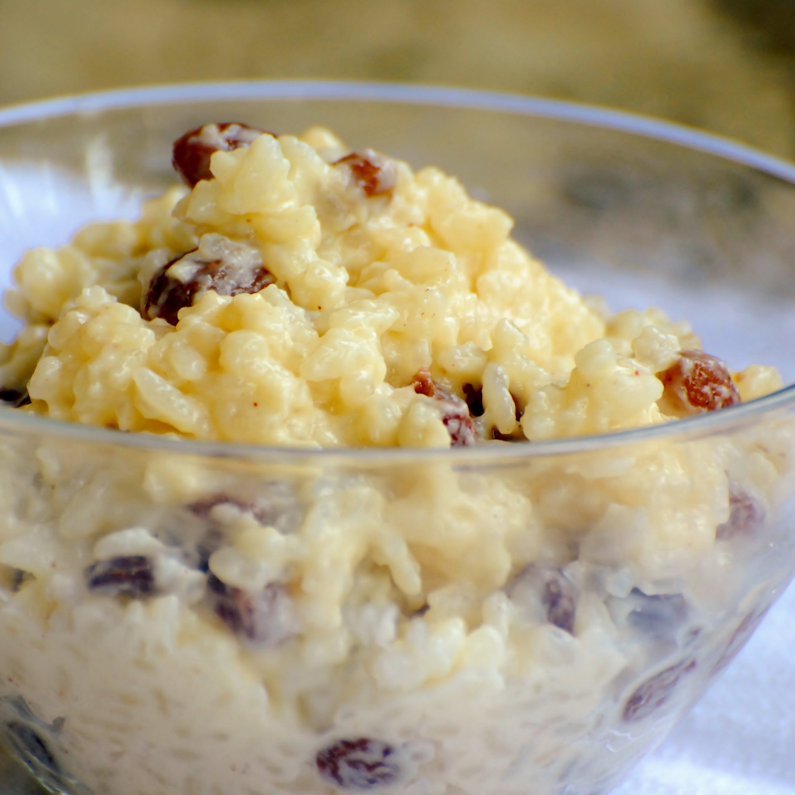

Creamy Rice Pudding

Description
A simple delicious creamy rice pudding recipe. Sprinkle with nutmeg or cinnamon, if desired. For creamier pudding, use short or medium grain rice.
Ingredients
- 3/4 cup of uncooked white rice
- 2 cups of milk, divided
- 1/3 cup of white sugar
- 1/4 teaspoon of salt
- 1 egg, beaten
- 2/3 cup golden raisins
- 1 tablespoon of butter
- 1/2 teaspoon of vanilla extract
Steps
- Bring 1 and 1/2 cups of water to a boil in a saucepan; stir rice into boiling water. Reduce heart to low, cover, and simmer for 20 minutes.
- In a clean saucepan, combine 1 and 1/2 cups cooked rice, 1 and 1/2 cups milk, sugar and salt. Cook over medium heat until thick and creamy, 15 to 20 minutes.
Stir in remaining 1/2 cup milk, beaten egg, and raisins; cook 2 minutes more, stirring constantly. Remove from the heart and stir in butter and vanilla.
- Serve and add nutmeg or cinnamon if desired